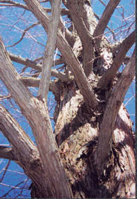

Ancient Dawn Redwood

Metasequoia Glyptostrobodies
"The Dawn Redwood is an ancient tree. Once thought to be extinct,
it was found in fossilized form in Japan, 1941. It was then found growing wild
in China. The species is over 50 million years old. It was introduced to the
U.S. and Europe in 1948, and since has become a favorite ornamental tree.
Bonsai techniques work excellent with this tree. This Dawn Redwood was one of
the first in the United States. It is approximately 50 years old. It is
located at Schoepfle's Garden in Birmingham, Ohio. This beautiful garden began
in 1936 by Otto B. Schoepfle and was donated to Lorain County Metro Parks in
1969. This photo was taken in February 2000, notice it is without foliage. It
is one of few cone-bearing deciduous trees. It is a member of the Redwood
family (Taxodiaceae), which also includes the Bald Cypress; the two are very
closely related. The foliage starts very bright green and feather like in
spring, and turns a beautiful golden in the fall before it dr!
!
ops its needles. I've had the pleasure of planting hundreds of these ancient
trees, I can't wait to see them grow up!"
-Julie Gladney
© Julie Gladney
"Metasequoia"
Color Photo
Common Name: Dawn Redwood
Latin Name: Metasequoia Glyptostrobodies
Location: Birmingham, Ohio USA
 Return to
Main
Page
Return to
Main
Page
Comments
Please send e-mail to: June Julian jj68@nyu.edu